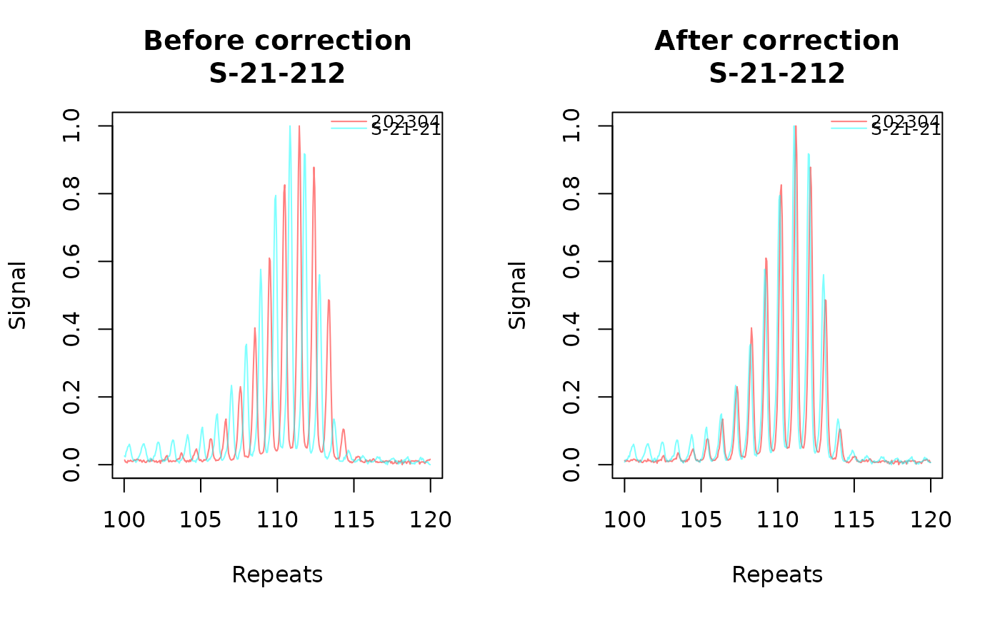
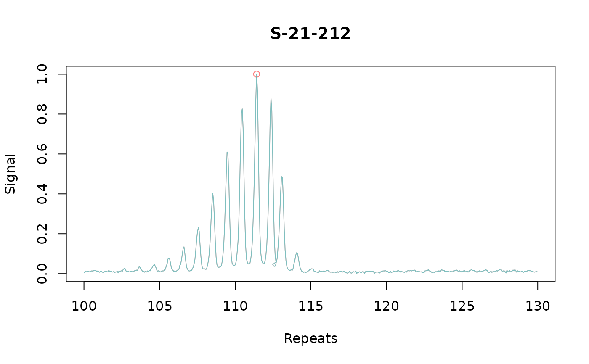

plot size standard samples
plot_batch_correction_samples.RdPlot the overlapping traces of the size standards by their size standard ids
Usage
plot_batch_correction_samples(
fragments_list,
sample_subset = NULL,
x_axis = "size",
n_facet_col = 1,
xlim = NULL
)Arguments
- fragments_list
A list of fragments_repeats objects containing fragment data.
- sample_subset
A character vector of batch_sample_id for a subset of samples to plot. Or alternativly supply a numeric vector.
- x_axis
A character indicating what should be plotted on the x-axis, chose between
sizeorrepeats. Only use repeats if plotting after the repeat correction.- n_facet_col
A numeric value indicating the number of columns for faceting in the plot.
- xlim
the x limits of the plot. A numeric vector of length two.
Details
A plot of the raw signal by bp size or repeats for the size standard samples. The cicle at the top of the plot is for the called allele for that sample.
When plotting the traces before repeat correction, we do not expect the samples to be closely overallping due to run-to-run variation. After repeat correction and plotting "repeats" on the x-axis, the traces should be bascially overlapping. It can be difficult from the "repeats" x-axis to figure out which sample is wrong because if one is wrong it will mess up the repeat size for all other samples in that same batch_run_id. Use the "size" x-axis to make sure all of the traces have the same distribution and modal peak."
These plots are made using base R plotting. Sometimes these fail to render in the viewing panes of IDEs (eg you get the error 'Error in plot.new(): figure margins too large)'. If this happens, try saving the plot as a pdf using traditional approaches (see grDevices::pdf). To get it to render in the IDE pane, trying matching n_facet_col to the number of samples you're attmpting to plot, or using sample_subset to limit it to a single sample.
Examples
test_ladders <- find_ladders(cell_line_fsa_list, show_progress_bar = FALSE)
# duplicate data to generate an example
test_metadata <- add_metadata(
fragments_list = test_ladders,
metadata_data.frame = metadata
)
test_metadata2 <- lapply(test_metadata, function(sample) {
sample2 <- sample$clone()
sample2$trace_bp_df$size <- sample2$trace_bp_df$size + 2
sample2$unique_id <- paste0(sample$unique_id, "_2")
sample2$batch_run_id <- paste0(sample2$batch_run_id, "_2")
return(sample2)
})
names(test_metadata2) <- sapply(test_metadata2, function(x) x$unique_id)
metadata_added_combined <- c(test_metadata, test_metadata2)
test_fragments <- find_fragments(metadata_added_combined, min_bp_size = 300)
test_alleles <- find_alleles(
fragments_list = test_fragments,
number_of_peaks_to_return = 1,
peak_region_size_gap_threshold = 6,
peak_region_height_threshold_multiplier = 1
)
test_repeats_corrected <- call_repeats(
fragments_list = test_alleles,
repeat_calling_algorithm = "simple",
assay_size_without_repeat = 87,
repeat_size = 3,
batch_correction = TRUE
)
#> Warning: 20230413_A04.fsa: repeats were not called (no main peaks in sample)
#> Warning: 20230413_B07.fsa: repeats were not called (no main peaks in sample)
#> Warning: 20230413_D11.fsa: repeats were not called (no main peaks in sample)
#> Warning: 20230413_A04.fsa_2: repeats were not called (no main peaks in sample)
#> Warning: 20230413_B07.fsa_2: repeats were not called (no main peaks in sample)
#> Warning: 20230413_D11.fsa_2: repeats were not called (no main peaks in sample)
# traces of bp size shows traces at different sizes
plot_batch_correction_samples(test_repeats_corrected,
x_axis = "size",
sample_subset = "S-21-212", xlim = c(400, 450)
)

# overlapping traces when looking at the corrected repeat length
plot_batch_correction_samples(test_repeats_corrected,
x_axis = "repeats",
sample_subset = "S-21-212", xlim = c(100, 130)
)
